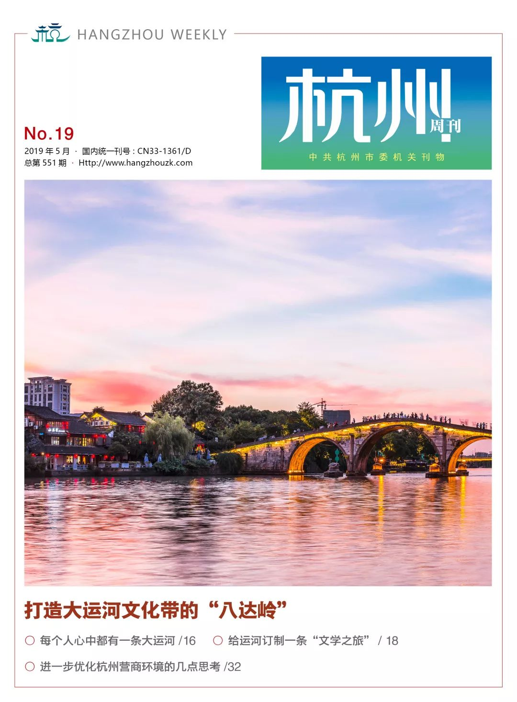

新刊速览 | 打造大运河文化带的“八达岭”
2019-06-10 17：29

中国大运河历史悠久，距今已经有2500年的历史，是一项极其宝贵的民族文化遗产和世界文化遗产。它既是一部流动的厚重史书，也是中华文明的重要标识，承载着中华民族的文化记忆。
2019年2月，中共中央办公厅、国务院办公厅印发《大运河文化保护传承利用规划纲要》，明确大运河文化带建设的方向、目标和任务，标志着大运河文化带建设作为国家战略工作的全面启动。
大运河文化带建设是一项系统工程，既要传承历史韵味，又要擦亮金字招牌、扩大国际影响，还要统筹好保护传承利用关系。只有创新工作思路和方法，整合优化各类资源，才能把老祖宗留给我们的宝贵遗产，焕发出新的活力和生机。
杭州之于大运河，正如八达岭之于长城。杭州是京杭大运河的南起点，也是大运河的颜值担当。杭州段大运河全长385.5公里，其内涵是极其丰富的，蕴含着多样的政治、经济、历史、文化元素，其中世界遗产点就有11个。经过十多年的综合保护和利用，大运河杭州段已成为杭州的城市品牌和4A级景区，其中不少旅游观光、休闲消费节点颇受游客欢迎，成为了网红打卡点和摄影胜地；覆盖城区、景区的公共自行车和运河巴士服务网络，将沿岸的旅游点串珠成链，为广大市民以及游客提供更方便、更安全、更低碳的出行方式，形成杭城一道特别的美丽风景线。
大运河文化带建设国家战略的提出，给杭州带来了巨大的机遇。推进大运河（杭州段）文化带建设，既是杭州的光荣使命，也是杭州的应有担当。杭州将按照省委部署要求，以中国大运河世界遗产为主体，统筹保护传承利用杭州大运河文化，对标长城，比肩八达岭，从空间格局、文化研究、标志品牌、国际高地、联动平台等方面着手着力着心，努力成为大运河文化带中最具特色与知名度的价值展示示范段，共同开创、引领与打造大运河文化带的“新时代”。